| 日付 | 2013年1月13日（日） |
|---|---|
| 山域 | 高尾周辺 |
| メンバー | グループ（男8女7子供1） |
| 山行形態 | 子連れ日帰り |
| アクセス | 電車、バス |
| ルート (Map) | 小仏 (9:34) - (11:08) 景信山 (14:05) - (14:55) 小仏 |
景信山は高尾山と陣馬山の間にある山で、山頂には茶屋が並び、多くの登山者に親しまれている。
その山頂で餅つきができるということで、山仲間と餅を食べに景信山を目指す。
昨年もこの企画に参加しようとしていたのだが、直前に風邪をひいてしまい泣く泣くキャンセル。
1年ぶりのリベンジ山行だ。
小仏バス停到着。標高290m。
登山者が多いためバスが2台出動している。
大混雑のバスで子供は大泣き。移動だけで疲れてしまった。
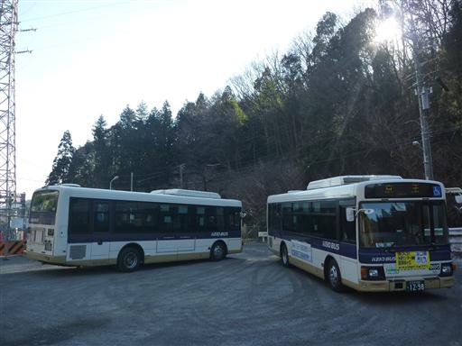
登山口までしばらくは車道を歩いていく。
今回はゆっくりと歩いて山頂を目指すため、我々家族は他のメンバーより
1本早いバスに乗って先行して歩き始める。
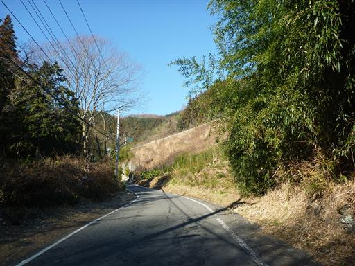
景信山の登山道入口に到着。
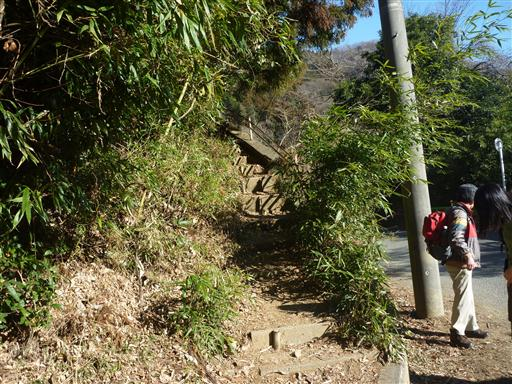
コースタイムは山頂まで1時間程度。ゆっくりゆっくり登っていく。
途中で後続メンバーに追い抜かれてしまったが、あくまでマイペースだ。
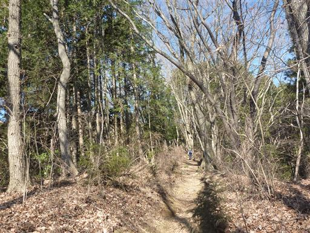
景信山の山頂に到着。いくつかの茶屋と無数のベンチ・テーブルが並んでいる。
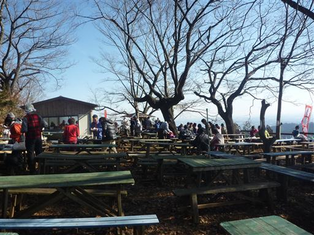
餅つきを始める前に、景信山の山頂標識がある最高点を訪れる。標高727m。
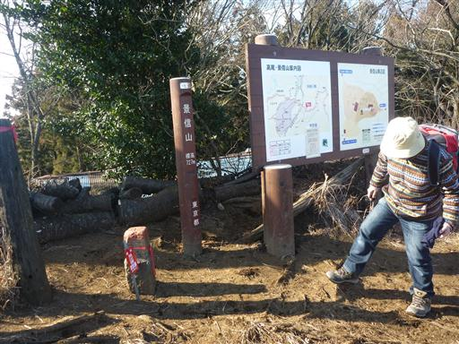
山頂からは関東平野を見渡すことができる。
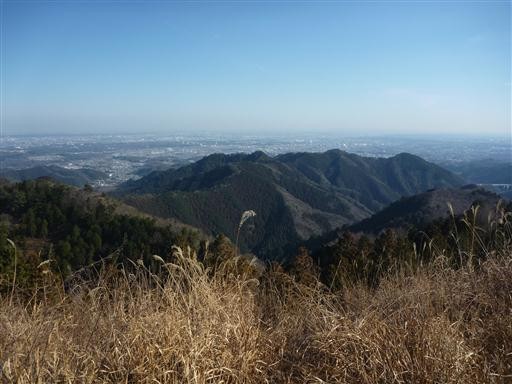
今回、餅つきの手配をしたかげ信小屋。そばやビールなども売られている。
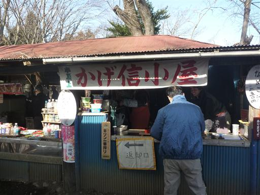
小屋の前のテーブルとベンチを確保し、もち米が炊き上がるのを待つ。
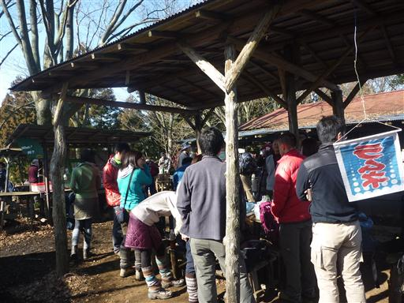
しばらく待つと、炊き立てのもち米が運ばれてくる。ここまでは小屋の人にやってもらえる。
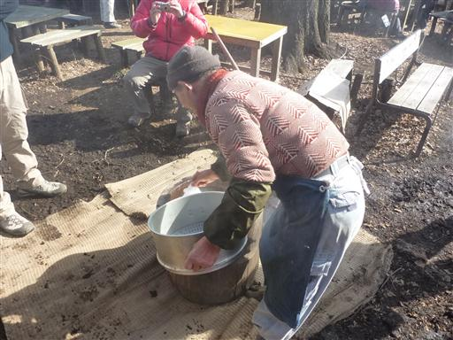
臼と杵を使って餅つき開始。餅つき経験者があまりいなくて手順がわからない。
最初はペッタンペッタンつくのではなく、グリグリとこねる必要があるらしい。
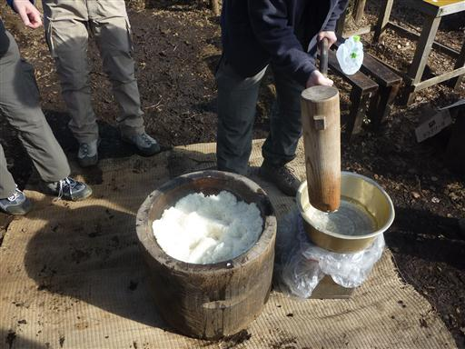
餅をつき終わると、小さくちぎって色々な具材をつけていく。
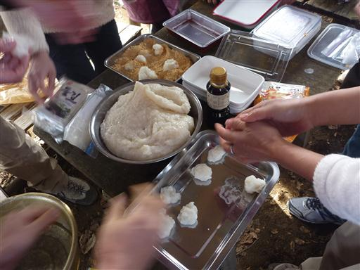
完成。あんこ、納豆、きなこ、大根おろし、醤油とバリエーションに富んでいる。
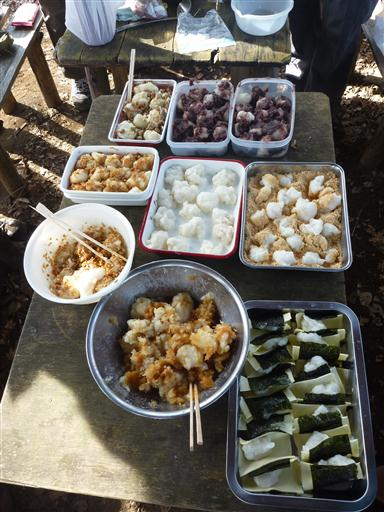
豚汁を作ってくれたメンバーもいて、皆で宴会を開始する。
子供にも餅を小さくちぎってあげると、パクパク食べている。
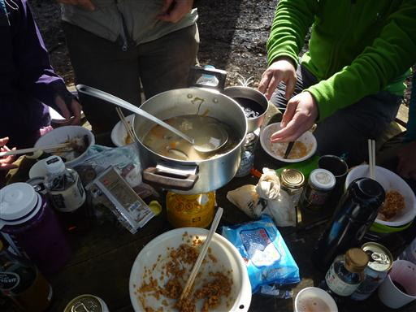
餅を食べ終えると眠くなったのか子供はグズグズ。
いつもは下山中にザックに揺られて寝ているのだが、今日はまだみんな宴会中。
仕方がないので子供をザックに乗せて、寝るまで高尾山方面に歩いていくことにする。
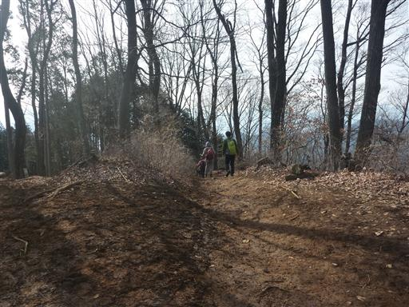
右が城山、左が高尾山。背後に見えるのは丹沢山塊だ。
幸い子供は10分程度歩いたら寝てくれた。
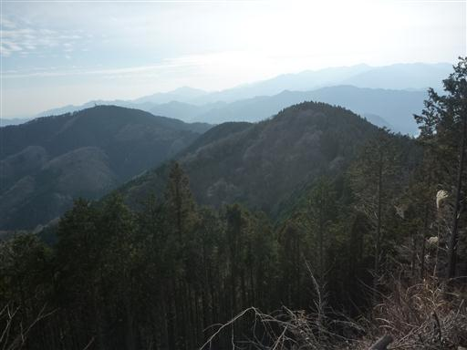
再び宴会に合流。子供がいるとゆっくり落ち着くことはできないが、仕方がない。
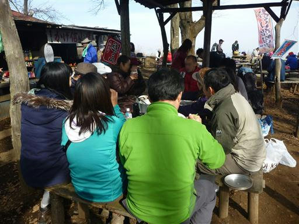
子供はザックに座ったまま1時間近く寝てくれた。
今日はこの時期にしては比較的気温が高く、風もなかったので助かった。
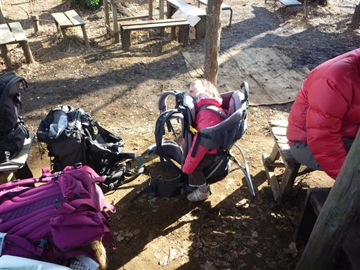
宴会中にふと辺りを見渡すと、賑わっていた山頂もだいぶ人影が少なくなっている。
我々もそろそろ撤収の準備を開始する。

みんなと一緒にのんびり歩いて下山する。

小仏バス停に到着すると大行列ができている。さすがは人気の山だ。
個人的には少々せわしなかったが、久しぶりに山で宴会ができた山行だった。
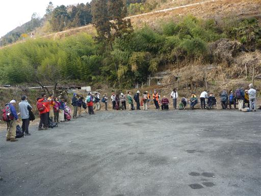